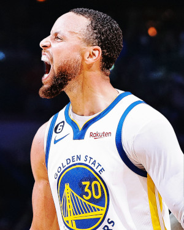
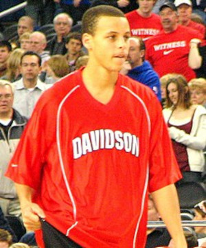
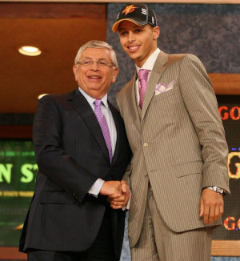
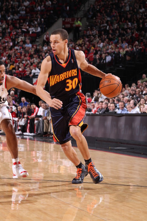
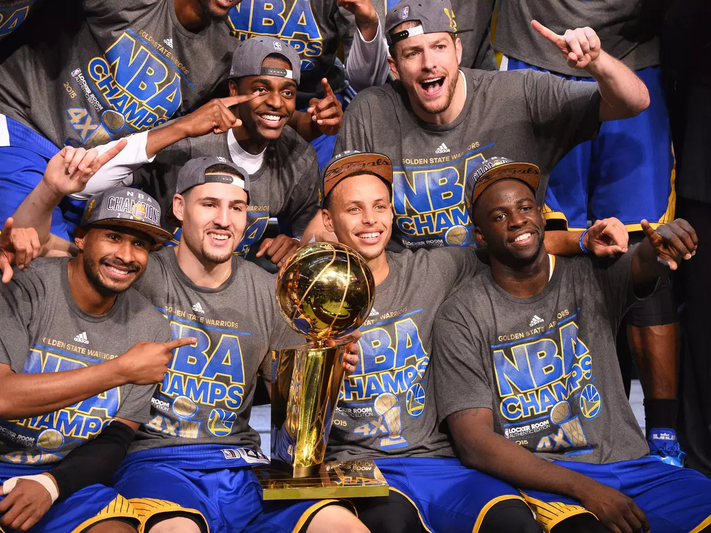
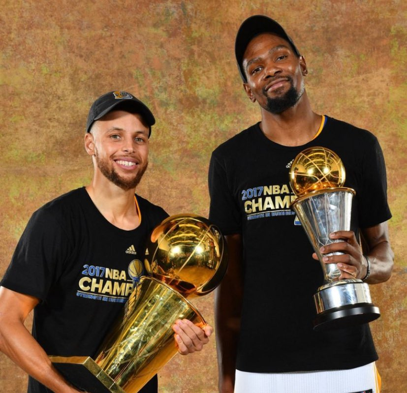
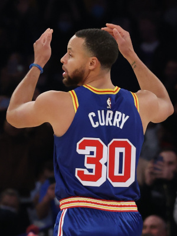
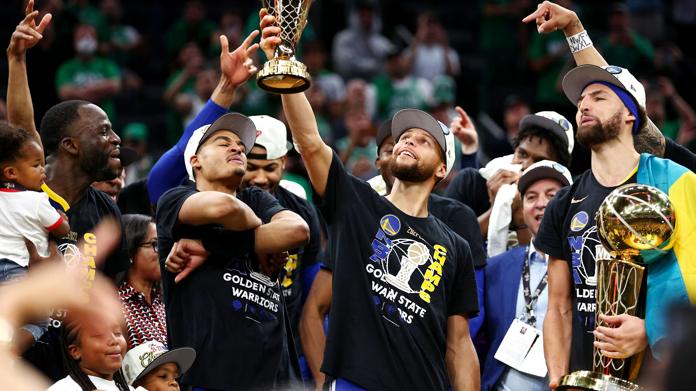

Stephen Curry

Stephen Curry
Wardell Stephen Curry II, jogador norte-americano nascido em Akron em 14 de março de 1988, é amplamente considerado o melhor arremessador da história. Ele se consolidou como um dos maiores nomes do esporte, dividindo a mesma prateleira que lendas como Michael Jordan, LeBron James, Bill Russell e Kareem Abdul-Jabbar.
Curry revolucionou a forma como o basquete é jogado, obrigando times e jogadores a colocarem o arremesso de 3 pontos no centro de suas estratégias.
Em suas 17 temporadas disputadas até então (2025-26), ele provou o porquê de ser considerado uma lenda do esporte, acumulando conquistas grandiosas e históricas.
Pronto para ver o que o "Chef Curry" realizou?
Davidson College
Antes de brilhar na NBA, Curry já mostrava ao mundo do que era capaz na Davidson College, onde atuou entre 2006 e 2009.
Lá, ele empilhou recordes impressionantes: tornou-se o maior pontuador da história da universidade, quebrou o recorde da NCAA de bolas de 3 em uma única temporada (162 acertos) e foi o grande líder de pontuação da temporada 2008-2009.
O impacto de sua passagem foi tão marcante que, em 2022, a instituição imortalizou a camisa número 30 — a primeira e única a ser aposentada na história do seu programa de basquete.


Draft 2009
Em 2009, Curry foi selecionado como a 7ª escolha do Draft pelo Golden State Warriors, uma franquia que até então possuía três títulos da NBA.
Embora já fosse reconhecido como um excelente arremessador em sua classe, críticos duvidavam de seu porte físico e não o viam como o talento geracional e a superestrela que viria a se tornar.
Ninguém imaginava que aquela escolha mudaria a franquia e a liga para sempre.
O Começo
Os primeiros anos de Curry na NBA foram marcados por altos e baixos. Apesar de mostrar flashes de genialidade e um arremesso letal, ele sofreu com constantes lesões nos tornozelos, o que fez muitos analistas duvidarem se ele conseguiria ter uma carreira longa e saudável na liga.
O grande ponto de virada aconteceu na temporada 2012-13. Com os tornozelos finalmente fortalecidos e a troca do então astro do time, Monta Ellis, Curry assumiu de vez as rédeas do Golden State Warriors.
Naquele ano, ele chocou o mundo do basquete ao bater o recorde da NBA de bolas de três em uma única temporada (272 acertos) e ao liderar a equipe de volta aos playoffs, provando sua resiliência e preparando o terreno para a dinastia que estava por vir.


Título de 2015
A temporada 2014-15 marcou a consagração definitiva de Curry. Ele conquistou seu primeiro prêmio de MVP da temporada regular e liderou o Golden State Warriors ao seu primeiro título da NBA em 40 anos, vencendo o Cleveland Cavaliers de LeBron James na final.
Esse título deu início à chamada "dinastia" dos Warriors, construída em torno do estilo de jogo revolucionário de Curry, baseado em arremessos de três pontos a longas distâncias e em um ritmo de jogo nunca visto antes na liga.
A temporada seguinte, 2015-16, seria ainda mais histórica: Curry se tornou o primeiro jogador da história a ser eleito MVP por unanimidade, além de quebrar seu próprio recorde de bolas de três em uma temporada, com 402 acertos.
Títulos de 2017 e 2018
Com a chegada de Kevin Durant em 2016, o Golden State Warriors se tornou um verdadeiro "super time", e Curry, ao lado de Durant, Klay Thompson e Draymond Green, formou um dos quartetos mais dominantes já vistos no basquete.
Em 2017, os Warriors arrasaram a temporada e os playoffs, conquistando o segundo título de Curry com uma campanha quase perfeita, perdendo apenas uma partida em toda a pós-temporada.
No ano seguinte, em 2018, a equipe confirmou sua hegemonia ao vencer o Cleveland Cavaliers novamente na final, garantindo o terceiro anel de Curry e consolidando os Warriors como uma das maiores dinastias da história recente da NBA.


Recordes
Ao longo de sua carreira, Curry redefiniu os limites do que se considerava possível em uma quadra de basquete. Ele é, disparado, o maior arremessador de três pontos da história da NBA, tendo ultrapassado a marca de 3.700 cestas de longa distância.
Além do recorde geral, Curry também detém a marca de mais bolas de três convertidas em uma única temporada, com 402 acertos na campanha 2015-16, número muito acima de qualquer outro jogador na história.
Outro feito notável é a sequência de mais jogos consecutivos acertando ao menos uma bola de três, recorde que reforça sua consistência impressionante ao longo de quase duas décadas de carreira.
Título de 2022 e Legado
Após alguns anos sem títulos, marcados por lesões e reformulações no elenco, Curry liderou o Golden State Warriors de volta ao topo da NBA em 2022, vencendo o Boston Celtics na final e conquistando seu quarto anel.
Nessa campanha, ele finalmente conquistou o prêmio de MVP das Finais, único título individual que ainda faltava em sua coleção, silenciando de vez qualquer crítica sobre sua importância nas conquistas dos Warriors.
Hoje, Stephen Curry é reconhecido não apenas como o maior arremessador de todos os tempos, mas como um dos jogadores que mais transformaram o basquete moderno, inspirando gerações de jogadores ao redor do mundo a abraçar o arremesso de três pontos como uma arma fundamental do jogo.
